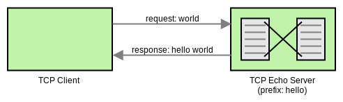

Raw TCP Traffic Shaping with Istio 1.1.0
Istio provides sophisticated routing mechanics via concepts like VirtualService, DestinationRule, Gateway, etc. Istio 1.0 enabled HTTP traffic shifting via weighted route definitions. I was able to contribute a similar feature for TCP/TLS services via my PRs on Envoy and on Istio. The feature in Envoy was released in 1.8.0 and the one in Istio will be available in the upcoming 1.1.0 release.

In this article, we’ll be looking at a simple TCP Echo Server written in Go, containerize it with Docker, deploy it over Kubernetes, and exercise Istio’s weighted TCP routing feature over it to understand its behavior in production services.
The TCP Echo Server
For the purpose of this post, we’ll be creating a simple TCP Server which listens to connections and prepends a simple prefix to the Client request data and returns it as a response. Below is a pictorial representation of the same.

Let’s now look at the Go code for the TCP Echo Server.
package main
import (
"bufio"
"fmt"
"io"
"net"
"os"
)
// main serves as the program entry point
func main() {
// obtain the port and prefix via program arguments
port := fmt.Sprintf(":%s", os.Args[1])
prefix := os.Args[2]
// create a tcp listener on the given port
listener, err := net.Listen("tcp", port)
if err != nil {
fmt.Println("failed to create listener, err:", err)
os.Exit(1)
}
fmt.Printf("listening on %s, prefix: %s\n", listener.Addr(), prefix)
// listen for new connections
for {
conn, err := listener.Accept()
if err != nil {
fmt.Println("failed to accept connection, err:", err)
continue
}
// pass an accepted connection to a handler goroutine
go handleConnection(conn, prefix)
}
}
// handleConnection handles the lifetime of a connection
func handleConnection(conn net.Conn, prefix string) {
defer conn.Close()
reader := bufio.NewReader(conn)
for {
// read client request data
bytes, err := reader.ReadBytes(byte('\n'))
if err != nil {
if err != io.EOF {
fmt.Println("failed to read data, err:", err)
}
return
}
fmt.Printf("request: %s", bytes)
// prepend prefix and send as response
line := fmt.Sprintf("%s %s", prefix, bytes)
fmt.Printf("response: %s", line)
conn.Write([]byte(line))
}
}
To test this program, simply copy the code into a file named main.go and run
it as shown below.
$ go run -v main.go 9000 hello
listening on [::]:9000, prefix: hello
We can now interact with this program over TCP via nc (Netcat).
To send a request, we can use a BusyBox container as shown below.
$ docker run -it --rm busybox sh -c 'echo world | nc docker.for.mac.localhost 9000'
hello world
As you see, the request “world” was prepended with “hello” which resulted in the
“hello world” response. Note that I’m executing the BusyBox container over
Docker for Mac which is why I access
the TCP Echo Server via docker.for.mac.localhost instead of localhost.
Containerizing The TCP Echo Server
Since we eventually want to run the TCP Echo Server over a Kubernetes cluster, let’s now put it in a container and publish the image to Docker Hub.
Firstly, we create a Dockerfile with the following contents.
# build a main binary using the golang container
FROM golang:1.11 as builder
WORKDIR /go/src/github.com/venilnoronha/tcp-echo-server/
COPY main.go .
RUN CGO_ENABLED=0 GOOS=linux go build -a -installsuffix cgo -o main main.go
# copy the main binary to a separate container based on alpine
FROM alpine:3.8
RUN apk --no-cache add ca-certificates
WORKDIR /bin/
COPY --from=builder /go/src/github.com/venilnoronha/tcp-echo-server/main .
ENTRYPOINT [ "/bin/main" ]
CMD [ "9000", "hello" ]
EXPOSE 9000
We now build the container and publish the image to Docker Hub as shown below.
$ docker build -t vnoronha/tcp-echo-server:latest .
Sending build context to Docker daemon 60.93kB
...
Successfully built d172af115e18
Successfully tagged vnoronha/tcp-echo-server:latest
$ docker push vnoronha/tcp-echo-server:latest
The push refers to repository [docker.io/vnoronha/tcp-echo-server]
b4cc76510de6: Pushed
...
latest: digest: sha256:0a45b5a0d362db6aa9154717ee3f2b... size: 949
Deploying The TCP Echo Server On Kubernetes
Service Configuration
We want to deploy 2 versions of the TCP Echo Server, both with different
prefixes to show the routing behavior. To do so, we create service.yaml with
a Kubernetes Service
and 2 Deployments
for the 2 different versions of TCP Echo Server we want to run.
apiVersion: v1
kind: Service
metadata:
name: tcp-echo-server
labels:
app: tcp-echo-server
istio: ingressgateway # use istio default controller
spec:
selector:
app: tcp-echo-server
ports:
- port: 9000
name: tcp
---
apiVersion: extensions/v1beta1
kind: Deployment
metadata:
name: tcp-echo-server-v1
spec:
replicas: 1
template:
metadata:
labels:
app: tcp-echo-server
version: v1
spec:
containers:
- name: tcp-echo-server
image: vnoronha/tcp-echo-server:latest
args: [ "9000", "one" ] # prefix: one
imagePullPolicy: IfNotPresent
ports:
- containerPort: 9000
---
apiVersion: extensions/v1beta1
kind: Deployment
metadata:
name: tcp-echo-server-v2
spec:
replicas: 1
template:
metadata:
labels:
app: tcp-echo-server
version: v2
spec:
containers:
- name: tcp-echo-server
image: vnoronha/tcp-echo-server:latest
args: [ "9000", "two" ] # prefix: two
imagePullPolicy: IfNotPresent
ports:
- containerPort: 9000
Deploying Minikube
Minikube serves as a great tool for locally developing on Kubernetes. I’ve started my Minikube instance with the following command.
$ minikube start --bootstrapper kubeadm \
--memory=8192 \
--cpus=4 \
--kubernetes-version=v1.10.0 \
--vm-driver=virtualbox
Starting local Kubernetes v1.10.0 cluster...
...
Kubectl is now configured to use the cluster.
Loading cached images from config file.
Installing Istio
At the time of writing this article, Istio 1.1.0 wasn’t released. Therefore, I resorted to an Istio Daily Pre-Release to demonstrate the new feature. Please refer to the Istio Docs to learn to download and configure Istio.
Once configured, here’s an easy way to fully deploy Istio components.
$ kubectl apply -f install/kubernetes/helm/istio/templates/crds.yaml
customresourcedefinition.apiextensions.k8s.io/virtualservices.networking.istio.io created
...
customresourcedefinition.apiextensions.k8s.io/templates.config.istio.io created
customresourcedefinition.apiextensions.k8s.io/handlers.config.istio.io created
$ kubectl apply -f install/kubernetes/istio-demo.yaml
namespace/istio-system created
...
destinationrule.networking.istio.io/istio-policy created
destinationrule.networking.istio.io/istio-telemetry created
Deploying TCP Echo Servers With Istio Proxies
Since we want to demonstrate Istio’s routing mechanics, let’s deploy the
tcp-echo-server with the Istio Proxy side-car as shown below.
$ kubectl apply -f <(istioctl kube-inject -f service.yaml)
service/tcp-echo-server created
deployment.extensions/tcp-echo-server-v1 created
deployment.extensions/tcp-echo-server-v2 created
We can verify that the services are running via the following commands.
$ kubectl get pods
NAME READY STATUS RESTARTS AGE
tcp-echo-server-v1-78684f5697-sv5r5 2/2 Running 0 56s
tcp-echo-server-v2-74bf9999c8-hhhf9 2/2 Running 0 56s
$ kubectl logs tcp-echo-server-v1-78684f5697-sv5r5 tcp-echo-server
listening on [::]:9000, prefix: one
$ kubectl logs tcp-echo-server-v2-74bf9999c8-hhhf9 tcp-echo-server
listening on [::]:9000, prefix: two
Weighted TCP Routing With Istio
This is the final part of this exercise where we define a VirtualService,
DestinationRule and a Gateway with weighted routes and verify the system
behavior.
Routing Configuration
We create a DestinationRule with 2 subsets to represent the 2 versions of
the TCP Echo Server. The Gateway allows traffic to access the services on TCP
port 31400. Finally, the VirtualService specifies that 80% of the traffic
must be routed to TCP Echo Server v1 and 20% to v2.
apiVersion: networking.istio.io/v1alpha3
kind: DestinationRule
metadata:
name: destination
spec:
host: tcp-echo-server
subsets:
- name: v1
labels:
version: v1
- name: v2
labels:
version: v2
---
apiVersion: networking.istio.io/v1alpha3
kind: Gateway
metadata:
name: gateway
spec:
selector:
istio: ingressgateway
servers:
- port:
number: 31400
name: tcp
protocol: TCP
hosts:
- "*"
---
apiVersion: networking.istio.io/v1alpha3
kind: VirtualService
metadata:
name: route
spec:
hosts:
- "*"
gateways:
- gateway
tcp:
- match:
- port: 31400
route:
- destination:
host: tcp-echo-server
port:
number: 9000
subset: v1
weight: 80
- destination:
host: tcp-echo-server
port:
number: 9000
subset: v2
weight: 20
Deploying The Route Configuration
To apply the configuration, copy it to a file named route-config.yaml and
install it via the following command.
kubectl apply -f route-config.yaml
destinationrule.networking.istio.io/destination created
gateway.networking.istio.io/gateway created
virtualservice.networking.istio.io/route created
Verifying Istio’s TCP Routing Behavior
Let’s first determine the Ingress IP.
$ minikube ip
192.168.99.100
We can now send a few requests to the weight balanced TCP Echo Server via the Ingress.
$ for i in {1..10}; do
for> docker run -it --rm busybox sh -c '(date; sleep 1) | nc 192.168.99.100 31400'
for> done
one Sat Oct 20 04:38:05 UTC 2018
two Sat Oct 20 04:38:07 UTC 2018
two Sat Oct 20 04:38:09 UTC 2018
one Sat Oct 20 04:38:12 UTC 2018
one Sat Oct 20 04:38:14 UTC 2018
one Sat Oct 20 04:38:17 UTC 2018
one Sat Oct 20 04:38:19 UTC 2018
one Sat Oct 20 04:38:22 UTC 2018
one Sat Oct 20 04:38:24 UTC 2018
two Sat Oct 20 04:38:27 UTC 2018
As you see, about 80% of the requests have a prefix of “one” and the rest 20% have a prefix of “two”. This proves that the weighted TCP routes are indeed in effect.
The diagram below should give you a good idea as to how the Istio landscape for this demonstration looks like.

Cleanup
Just delete the Minikube deployment, like so:
$ minikube stop && minikube delete
Stopping local Kubernetes cluster...
Machine stopped.
Deleting local Kubernetes cluster...
Machine deleted.
Conclusion
As shown in this article, it’s quite easy to configure weighted TCP routes via the upcoming Istio 1.1.0 release. Also, this article should give you a good idea on constructing your own weighted TCP routes, and shaping your TCP traffic from the ground up!
As always, please feel free to reach out with questions or comments.
Disclaimer: My postings are my own and don’t necessarily represent VMware’s positions, strategies or opinions.